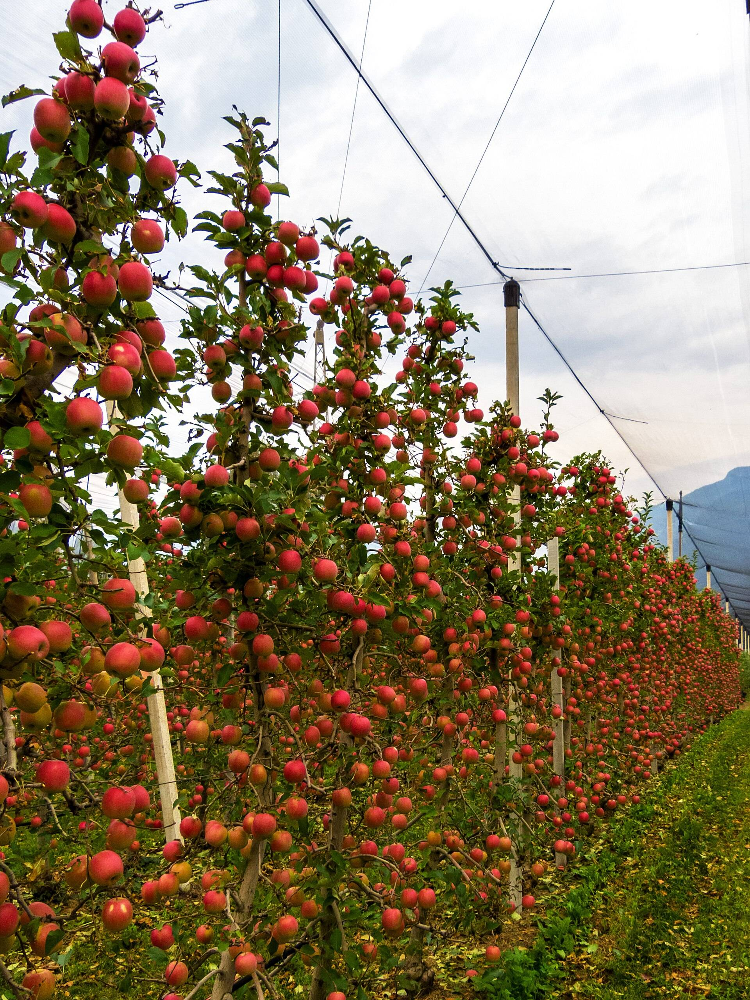
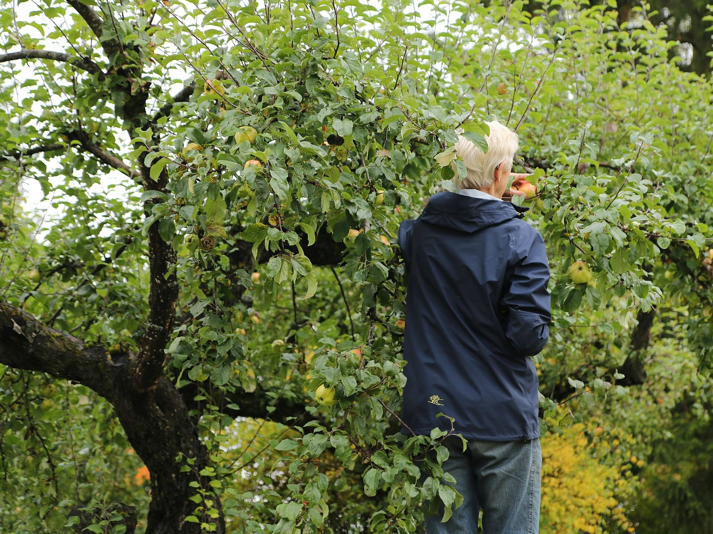
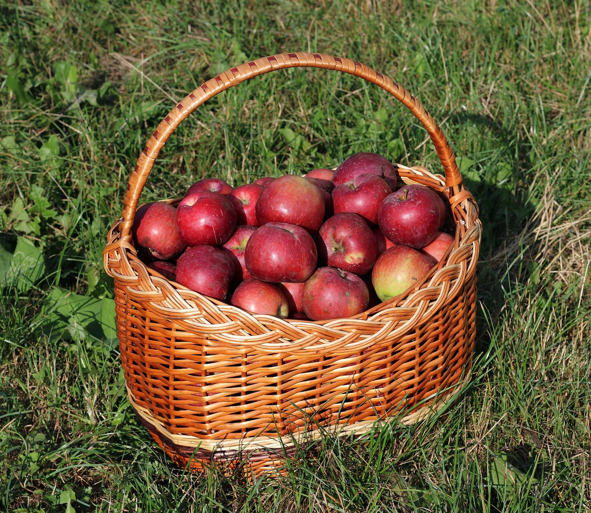

Six acres of apples, yours to pick.
A cider orchard in Herefordshire, open for pick-your-own.

Two months on the trees.
Picking runs from September to the end of October.
- Jan
- Feb
- Mar
- Apr
- May
- Jun
- Jul
- Aug
- SeptemberPick-your-own
- OctoberPick-your-own
- Nov
- Dec

Reach in, lift and twist.
A ripe apple comes away in your hand. One that holds on wants another week.
22 Apple varieties in the rows.
- Planted for
- Cider, on six acres
- In the rows
- Taste as you go
- To take home
- A bag from the trees you liked
Three ciders, to take home after picking.
Prices to come.
Dry
Crisp, for the table
Medium
Rounder, with a little sweetness
Sweet
For the end of the day

Plan a visit.
- When
- September to the end of October
- Where
- Herefordshire, full address to come
- Bring home
- Your apples and a bottle of cider